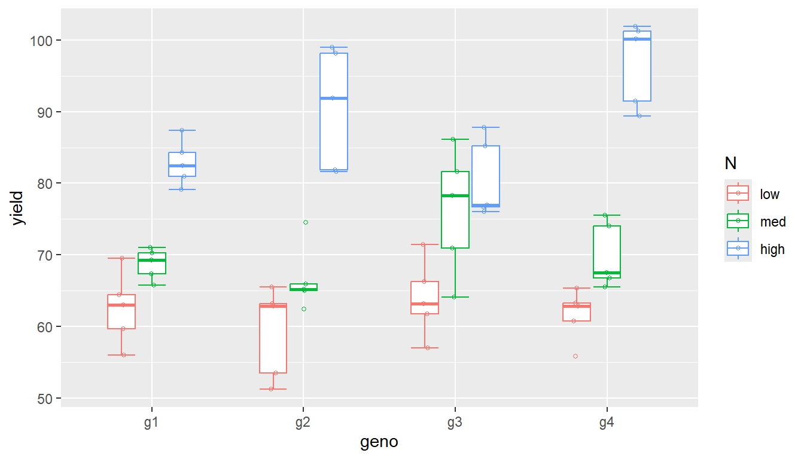

library(ggplot2)# plotting
library(dplyr)# data management and summary statistics
library(ggpubr)# plotting
library(openxlsx)# import and export Excel files
library(forcats)# factor repordering
library(DHARMa) # model diagnostics
library(emmeans) # posthoc tests
library(multcomp) # cld
library(multcompView) #cld
library(glmmTMB) # mixed model
library(car) # anova for glmmTMB
library(lme4) # lmer and glmer mixed model
library(lmerTest) # test lmer
library(conflicted)
conflicts_prefer(lmerTest::lmer)
# Suppress summarise info
options(dplyr.summarise.inform = FALSE)Analysis of two-factorial experiments with general linear (mixed effect) models
Suppose we have a complete randomized design with three nitrogen fertilisation levels N (low, medium, high) and four genotypes geno (g1, g2, g3 and g4) and five replications rep. For each treatment crop yield yield was measured.
The research question is: Do yields differ between genotypes and nitrogen fertilisation? In particular, do genotypes respond differently to different nitrogen fertilisation?
Import data
df<-read.xlsx("data_YSM.xlsx")
str(df)'data.frame': 60 obs. of 7 variables:
$ rep : num 1 2 3 4 5 1 2 3 4 5 ...
$ geno : chr "g1" "g1" "g1" "g1" ...
$ N : chr "low" "low" "low" "low" ...
$ yield : num 55.9 63 69.5 59.6 64.4 ...
$ pests : num 3 0 8 1 4 8 4 6 4 16 ...
$ pests.A: num 82 91 86 58 45 111 85 107 82 86 ...
$ pests.B: num 82 91 86 58 45 111 85 107 82 86 ...convert geno and N to factors, levels of N should not be in alphabetical order
df <- df %>%
mutate(across(c(geno, N), ~ as.factor(.x)),
N=fct_relevel(N, "low", "med", "high"),
block=as.factor(rep))
str(df)'data.frame': 60 obs. of 8 variables:
$ rep : num 1 2 3 4 5 1 2 3 4 5 ...
$ geno : Factor w/ 4 levels "g1","g2","g3",..: 1 1 1 1 1 2 2 2 2 2 ...
$ N : Factor w/ 3 levels "low","med","high": 1 1 1 1 1 1 1 1 1 1 ...
$ yield : num 55.9 63 69.5 59.6 64.4 ...
$ pests : num 3 0 8 1 4 8 4 6 4 16 ...
$ pests.A: num 82 91 86 58 45 111 85 107 82 86 ...
$ pests.B: num 82 91 86 58 45 111 85 107 82 86 ...
$ block : Factor w/ 5 levels "1","2","3","4",..: 1 2 3 4 5 1 2 3 4 5 ...Plot data
ggplot(df, aes(y=yield, x=N, col=geno)) +
stat_boxplot(geom ="errorbar", width = 0.6)+
geom_boxplot(outlier.shape=NA, width = 0.6) +
geom_jitter(position=position_jitterdodge(jitter.width = 0.1, jitter.height = 0,
dodge.width=0.6), shape=1, size=1)ggplot(df, aes(y=yield, x=geno, col=N)) +
stat_boxplot(geom ="errorbar", width = 0.6)+
geom_boxplot(outlier.shape=NA, width = 0.6) +
geom_jitter(position=position_jitterdodge(jitter.width = 0.1, jitter.height = 0,
dodge.width=0.6), shape=1, size=1)
CRD
Linear model (Anova)
We fit a linear model with yield as response and geno and N as explanatory variables. It is important that the dependent variable is continuous and the explanatory variables are factors. By using geno * N, we fit the main effect and interaction.
model <- lm(yield ~ geno * N, data = df)
summary(model)
Call:
lm(formula = yield ~ geno * N, data = df)
Residuals:
Min 1Q Median 3Q Max
-12.1180 -3.7234 0.0388 3.9731 9.9417
Coefficients:
Estimate Std. Error t value Pr(>|t|)
(Intercept) 62.4910 2.5157 24.840 < 2e-16 ***
genog2 -3.2606 3.5578 -0.916 0.36400
genog3 1.4225 3.5578 0.400 0.69106
genog4 -0.9117 3.5578 -0.256 0.79885
Nmed 6.2378 3.5578 1.753 0.08594 .
Nhigh 20.3527 3.5578 5.721 6.68e-07 ***
genog2:Nmed 1.1303 5.0315 0.225 0.82321
genog3:Nmed 6.0655 5.0315 1.206 0.23392
genog4:Nmed 2.0285 5.0315 0.403 0.68862
genog2:Nhigh 10.9283 5.0315 2.172 0.03483 *
genog3:Nhigh -3.7315 5.0315 -0.742 0.46193
genog4:Nhigh 14.9123 5.0315 2.964 0.00472 **
---
Signif. codes: 0 '***' 0.001 '**' 0.01 '*' 0.05 '.' 0.1 ' ' 1
Residual standard error: 5.625 on 48 degrees of freedom
Multiple R-squared: 0.8421, Adjusted R-squared: 0.8059
F-statistic: 23.28 on 11 and 48 DF, p-value: 1.381e-15Before interpreting the model, we perform model diagnostics by plotting residuals against fitted values and explanatory variables.
We visually check the assumptions of the ANOVA for
- approximate normal distribution of errors (i.e. residuals)
- homogeneity of variance
I use the library(DHARMa) for this. https://cran.r-project.org/web/packages/DHARMa/vignettes/DHARMa.html
simulationOutput <- simulateResiduals(fittedModel = model, plot = F)
plot(simulationOutput)The first graph shows a QQ plot of the standardised
residuals, which provides us with information about the normal distribution of the residuals. If the points lie approximately along the bisector (red line), this indicates that the residuals are approximately normally distributed. We are also shown p-values for the KS test (Kolmogorov-Smirnov test for normal distribution), a dispersion test and an outlier test.The second graph plots the ‘residuals’ against the ‘fitted values’. We want to see here that the dispersion around 0.5 is approximately the same for both high and low values (variance homogeneity). The plot is also helpful for identifying peculiar samples. These are shown as red asterisks (but do not necessarily have to be labelled as outliers).
To check the variance homogeneity between the groups, we should plot the residuals against the explanatory variables.
plotResiduals(simulationOutput, form = df$geno)plotResiduals(simulationOutput, form = df$N)As long as all tests are not significant (and no red lines or boxes are displayed), everything is (more or less) fine. BUT it should be noted that the power of the tests depends on the number of observations. The more observations we have, the higher the power of the test. This means that significant differences, e.g. in the variances, are often observed with a large sample size, although these are practically irrelevant. In addition, significant differences are often not observed with a small sample size, although there are significant differences.
The visual model diagnostics are therefore often regarded as more important than the p-value-based tests for normal distribution and variance homogeneity (Cochran, Bartlett and Levenes test).
Test of significance and posthoc tests
anova(model)Analysis of Variance Table
Response: yield
Df Sum Sq Mean Sq F value Pr(>F)
geno 3 195.6 65.2 2.0602 0.1179439
N 2 6955.4 3477.7 109.8981 < 2.2e-16 ***
geno:N 6 951.5 158.6 5.0114 0.0004664 ***
Residuals 48 1518.9 31.6
---
Signif. codes: 0 '***' 0.001 '**' 0.01 '*' 0.05 '.' 0.1 ' ' 1We have a significant interaction between genotype and nitrogen fertilisation, but we do not know which treatments differ from each other and we also do not know anything about the effect sizes, e.g. the difference in yield between low and medium nitrogen fertilisation for geno g1.
The library(emmeans) with the function emmeans() offers a variety of possibilities to perform a posthoc test on the fitted model and calculate confidence intervals.
emmeans(model, ~geno*N) geno N emmean SE df lower.CL upper.CL
g1 low 62.5 2.52 48 57.4 67.5
g2 low 59.2 2.52 48 54.2 64.3
g3 low 63.9 2.52 48 58.9 69.0
g4 low 61.6 2.52 48 56.5 66.6
g1 med 68.7 2.52 48 63.7 73.8
g2 med 66.6 2.52 48 61.5 71.7
g3 med 76.2 2.52 48 71.2 81.3
g4 med 69.8 2.52 48 64.8 74.9
g1 high 82.8 2.52 48 77.8 87.9
g2 high 90.5 2.52 48 85.5 95.6
g3 high 80.5 2.52 48 75.5 85.6
g4 high 96.8 2.52 48 91.8 101.9
Confidence level used: 0.95 With the argument method=‘pairwise’ you can compare all treatments with each other using Tukey test.
contrast(emmeans(model, ~geno*N), method="pairwise") contrast estimate SE df t.ratio p.value
g1 low - g2 low 3.261 3.56 48 0.916 0.9986
g1 low - g3 low -1.423 3.56 48 -0.400 1.0000
g1 low - g4 low 0.912 3.56 48 0.256 1.0000
g1 low - g1 med -6.238 3.56 48 -1.753 0.8340
g1 low - g2 med -4.107 3.56 48 -1.155 0.9900
g1 low - g3 med -13.726 3.56 48 -3.858 0.0159
g1 low - g4 med -7.355 3.56 48 -2.067 0.6470
g1 low - g1 high -20.353 3.56 48 -5.721 <.0001
g1 low - g2 high -28.020 3.56 48 -7.876 <.0001
g1 low - g3 high -18.044 3.56 48 -5.072 0.0004
g1 low - g4 high -34.353 3.56 48 -9.656 <.0001
g2 low - g3 low -4.683 3.56 48 -1.316 0.9728
g2 low - g4 low -2.349 3.56 48 -0.660 0.9999
g2 low - g1 med -9.498 3.56 48 -2.670 0.2722
g2 low - g2 med -7.368 3.56 48 -2.071 0.6445
g2 low - g3 med -16.986 3.56 48 -4.774 0.0010
g2 low - g4 med -10.615 3.56 48 -2.984 0.1454
g2 low - g1 high -23.613 3.56 48 -6.637 <.0001
g2 low - g2 high -31.281 3.56 48 -8.792 <.0001
g2 low - g3 high -21.304 3.56 48 -5.988 <.0001
g2 low - g4 high -37.614 3.56 48 -10.572 <.0001
g3 low - g4 low 2.334 3.56 48 0.656 0.9999
g3 low - g1 med -4.815 3.56 48 -1.353 0.9668
g3 low - g2 med -2.685 3.56 48 -0.755 0.9998
g3 low - g3 med -12.303 3.56 48 -3.458 0.0470
g3 low - g4 med -5.932 3.56 48 -1.667 0.8738
g3 low - g1 high -18.930 3.56 48 -5.321 0.0002
g3 low - g2 high -26.598 3.56 48 -7.476 <.0001
g3 low - g3 high -16.621 3.56 48 -4.672 0.0013
g3 low - g4 high -32.931 3.56 48 -9.256 <.0001
g4 low - g1 med -7.150 3.56 48 -2.010 0.6849
g4 low - g2 med -5.019 3.56 48 -1.411 0.9557
g4 low - g3 med -14.638 3.56 48 -4.114 0.0075
g4 low - g4 med -8.266 3.56 48 -2.323 0.4750
g4 low - g1 high -21.264 3.56 48 -5.977 <.0001
g4 low - g2 high -28.932 3.56 48 -8.132 <.0001
g4 low - g3 high -18.955 3.56 48 -5.328 0.0002
g4 low - g4 high -35.265 3.56 48 -9.912 <.0001
g1 med - g2 med 2.130 3.56 48 0.599 1.0000
g1 med - g3 med -7.488 3.56 48 -2.105 0.6220
g1 med - g4 med -1.117 3.56 48 -0.314 1.0000
g1 med - g1 high -14.115 3.56 48 -3.967 0.0116
g1 med - g2 high -21.783 3.56 48 -6.122 <.0001
g1 med - g3 high -11.806 3.56 48 -3.318 0.0668
g1 med - g4 high -28.115 3.56 48 -7.902 <.0001
g2 med - g3 med -9.618 3.56 48 -2.703 0.2558
g2 med - g4 med -3.247 3.56 48 -0.913 0.9987
g2 med - g1 high -16.245 3.56 48 -4.566 0.0019
g2 med - g2 high -23.913 3.56 48 -6.721 <.0001
g2 med - g3 high -13.936 3.56 48 -3.917 0.0134
g2 med - g4 high -30.246 3.56 48 -8.501 <.0001
g3 med - g4 med 6.371 3.56 48 1.791 0.8148
g3 med - g1 high -6.627 3.56 48 -1.863 0.7752
g3 med - g2 high -14.295 3.56 48 -4.018 0.0100
g3 med - g3 high -4.318 3.56 48 -1.214 0.9852
g3 med - g4 high -20.627 3.56 48 -5.798 <.0001
g4 med - g1 high -12.998 3.56 48 -3.653 0.0280
g4 med - g2 high -20.666 3.56 48 -5.809 <.0001
g4 med - g3 high -10.689 3.56 48 -3.004 0.1389
g4 med - g4 high -26.999 3.56 48 -7.589 <.0001
g1 high - g2 high -7.668 3.56 48 -2.155 0.5879
g1 high - g3 high 2.309 3.56 48 0.649 0.9999
g1 high - g4 high -14.001 3.56 48 -3.935 0.0127
g2 high - g3 high 9.977 3.56 48 2.804 0.2108
g2 high - g4 high -6.333 3.56 48 -1.780 0.8204
g3 high - g4 high -16.310 3.56 48 -4.584 0.0018
P value adjustment: tukey method for comparing a family of 12 estimates However, these are quite a few comparisons and we may not want to compare all possible combinations, but rather be interested in how each genotype responds in yield to increasing nitrogen fertilisation.
contrast(emmeans(model, ~N|geno), method="pairwise", infer=c(T,T)) geno = g1:
contrast estimate SE df lower.CL upper.CL t.ratio p.value
low - med -6.24 3.56 48 -14.8 2.367 -1.753 0.1963
low - high -20.35 3.56 48 -29.0 -11.748 -5.721 <.0001
med - high -14.11 3.56 48 -22.7 -5.510 -3.967 0.0007
geno = g2:
contrast estimate SE df lower.CL upper.CL t.ratio p.value
low - med -7.37 3.56 48 -16.0 1.236 -2.071 0.1067
low - high -31.28 3.56 48 -39.9 -22.676 -8.792 <.0001
med - high -23.91 3.56 48 -32.5 -15.308 -6.721 <.0001
geno = g3:
contrast estimate SE df lower.CL upper.CL t.ratio p.value
low - med -12.30 3.56 48 -20.9 -3.699 -3.458 0.0032
low - high -16.62 3.56 48 -25.2 -8.017 -4.672 0.0001
med - high -4.32 3.56 48 -12.9 4.287 -1.214 0.4510
geno = g4:
contrast estimate SE df lower.CL upper.CL t.ratio p.value
low - med -8.27 3.56 48 -16.9 0.338 -2.323 0.0621
low - high -35.26 3.56 48 -43.9 -26.660 -9.912 <.0001
med - high -27.00 3.56 48 -35.6 -18.394 -7.589 <.0001
Confidence level used: 0.95
Conf-level adjustment: tukey method for comparing a family of 3 estimates
P value adjustment: tukey method for comparing a family of 3 estimates Here we see the difference between the treatment levels for each genotype (estimate), the confidence interval of the difference (if it does not include the 0 we usually have significant differences) and the p.value.
The emmean is the predicted value for each treatment level.
emmeans(model, ~N|geno)geno = g1:
N emmean SE df lower.CL upper.CL
low 62.5 2.52 48 57.4 67.5
med 68.7 2.52 48 63.7 73.8
high 82.8 2.52 48 77.8 87.9
geno = g2:
N emmean SE df lower.CL upper.CL
low 59.2 2.52 48 54.2 64.3
med 66.6 2.52 48 61.5 71.7
high 90.5 2.52 48 85.5 95.6
geno = g3:
N emmean SE df lower.CL upper.CL
low 63.9 2.52 48 58.9 69.0
med 76.2 2.52 48 71.2 81.3
high 80.5 2.52 48 75.5 85.6
geno = g4:
N emmean SE df lower.CL upper.CL
low 61.6 2.52 48 56.5 66.6
med 69.8 2.52 48 64.8 74.9
high 96.8 2.52 48 91.8 101.9
Confidence level used: 0.95 We can also swap the interpretation code to obtain pairwise differences for the genotypes for each nitrogen level.
contrast(emmeans(model, ~geno|N), method="pairwise")N = low:
contrast estimate SE df t.ratio p.value
g1 - g2 3.261 3.56 48 0.916 0.7962
g1 - g3 -1.423 3.56 48 -0.400 0.9781
g1 - g4 0.912 3.56 48 0.256 0.9940
g2 - g3 -4.683 3.56 48 -1.316 0.5573
g2 - g4 -2.349 3.56 48 -0.660 0.9114
g3 - g4 2.334 3.56 48 0.656 0.9129
N = med:
contrast estimate SE df t.ratio p.value
g1 - g2 2.130 3.56 48 0.599 0.9319
g1 - g3 -7.488 3.56 48 -2.105 0.1662
g1 - g4 -1.117 3.56 48 -0.314 0.9891
g2 - g3 -9.618 3.56 48 -2.703 0.0452
g2 - g4 -3.247 3.56 48 -0.913 0.7982
g3 - g4 6.371 3.56 48 1.791 0.2903
N = high:
contrast estimate SE df t.ratio p.value
g1 - g2 -7.668 3.56 48 -2.155 0.1507
g1 - g3 2.309 3.56 48 0.649 0.9154
g1 - g4 -14.001 3.56 48 -3.935 0.0015
g2 - g3 9.977 3.56 48 2.804 0.0353
g2 - g4 -6.333 3.56 48 -1.780 0.2953
g3 - g4 -16.310 3.56 48 -4.584 0.0002
P value adjustment: tukey method for comparing a family of 4 estimates Instead of testing pairwise, we can test against one standard control, e.g. the low nitrogen level,
contrast(emmeans(model, ~N|geno), method="trt.vs.ctrl")geno = g1:
contrast estimate SE df t.ratio p.value
med - low 6.24 3.56 48 1.753 0.1557
high - low 20.35 3.56 48 5.721 <.0001
geno = g2:
contrast estimate SE df t.ratio p.value
med - low 7.37 3.56 48 2.071 0.0816
high - low 31.28 3.56 48 8.792 <.0001
geno = g3:
contrast estimate SE df t.ratio p.value
med - low 12.30 3.56 48 3.458 0.0023
high - low 16.62 3.56 48 4.672 <.0001
geno = g4:
contrast estimate SE df t.ratio p.value
med - low 8.27 3.56 48 2.323 0.0463
high - low 35.26 3.56 48 9.912 <.0001
P value adjustment: dunnettx method for 2 tests or the high nitrogen level.
contrast(emmeans(model, ~N|geno), method="trt.vs.ctrl", ref=3)geno = g1:
contrast estimate SE df t.ratio p.value
low - high -20.35 3.56 48 -5.721 <.0001
med - high -14.11 3.56 48 -3.967 0.0005
geno = g2:
contrast estimate SE df t.ratio p.value
low - high -31.28 3.56 48 -8.792 <.0001
med - high -23.91 3.56 48 -6.721 <.0001
geno = g3:
contrast estimate SE df t.ratio p.value
low - high -16.62 3.56 48 -4.672 <.0001
med - high -4.32 3.56 48 -1.214 0.3841
geno = g4:
contrast estimate SE df t.ratio p.value
low - high -35.26 3.56 48 -9.912 <.0001
med - high -27.00 3.56 48 -7.589 <.0001
P value adjustment: dunnettx method for 2 tests The compact letter display can be used to indicate or visualise group differences in an easily understandable way. For this we need the library(multcompView) and library(multcomp).
cld(emmeans(model, ~N|geno), method="pairwise", adjust="sidak", Letters=letters)geno = g1:
N emmean SE df lower.CL upper.CL .group
low 62.5 2.52 48 56.3 68.7 a
med 68.7 2.52 48 62.5 75.0 a
high 82.8 2.52 48 76.6 89.1 b
geno = g2:
N emmean SE df lower.CL upper.CL .group
low 59.2 2.52 48 53.0 65.5 a
med 66.6 2.52 48 60.4 72.8 a
high 90.5 2.52 48 84.3 96.7 b
geno = g3:
N emmean SE df lower.CL upper.CL .group
low 63.9 2.52 48 57.7 70.1 a
med 76.2 2.52 48 70.0 82.4 b
high 80.5 2.52 48 74.3 86.8 b
geno = g4:
N emmean SE df lower.CL upper.CL .group
low 61.6 2.52 48 55.4 67.8 a
med 69.8 2.52 48 63.6 76.1 a
high 96.8 2.52 48 90.6 103.1 b
Confidence level used: 0.95
Conf-level adjustment: sidak method for 3 estimates
P value adjustment: sidak method for 3 tests
significance level used: alpha = 0.05
NOTE: If two or more means share the same grouping symbol,
then we cannot show them to be different.
But we also did not show them to be the same. Groups that do not share a letter are significantly different according to the posthoc test, which is corrected for multiple testing using the Sidak method. (former Tukey)
Presentation of results
We calculate the confidence intervals and perform posthoc tests for each genotype.
CIs=cld(emmeans(model, ~N|geno), method="pairwise", adjust="sidak", Letters=letters)
CIs$.group =gsub(" ", "", CIs$.group, fixed = TRUE)
CIsgeno = g1:
N emmean SE df lower.CL upper.CL .group
low 62.5 2.52 48 56.3 68.7 a
med 68.7 2.52 48 62.5 75.0 a
high 82.8 2.52 48 76.6 89.1 b
geno = g2:
N emmean SE df lower.CL upper.CL .group
low 59.2 2.52 48 53.0 65.5 a
med 66.6 2.52 48 60.4 72.8 a
high 90.5 2.52 48 84.3 96.7 b
geno = g3:
N emmean SE df lower.CL upper.CL .group
low 63.9 2.52 48 57.7 70.1 a
med 76.2 2.52 48 70.0 82.4 b
high 80.5 2.52 48 74.3 86.8 b
geno = g4:
N emmean SE df lower.CL upper.CL .group
low 61.6 2.52 48 55.4 67.8 a
med 69.8 2.52 48 63.6 76.1 a
high 96.8 2.52 48 90.6 103.1 b
Confidence level used: 0.95
Conf-level adjustment: sidak method for 3 estimates
P value adjustment: sidak method for 3 tests
significance level used: alpha = 0.05
NOTE: If two or more means share the same grouping symbol,
then we cannot show them to be different.
But we also did not show them to be the same. And plot the data together with estimated marginal means and confidence intervals and mention that the letters display differences between nitrogen levels for each genotype according to the posthoc test.
ggplot(df, aes(y=yield, x=N, col=N)) +
stat_boxplot(geom ="errorbar", width = 0.6)+
geom_boxplot(outlier.shape=NA, width = 0.6) +
geom_jitter(position=position_jitterdodge(jitter.width = 0.1, jitter.height = 0,
dodge.width=0.6), shape=1, size=1)+
geom_point(data=CIs, aes(y=emmean),
shape=16, size=2,
position = position_nudge(x = 0.4))+
geom_errorbar(data=CIs, aes(y=emmean, ymin=lower.CL, ymax=upper.CL),
width=0.2, position = position_nudge(x = 0.4))+
geom_text(data=CIs, aes(y = 110, label =.group), col=1)+
scale_color_manual(values=c(rgb(240,215,35, max = 255),
rgb(190,210,35, max = 255),
rgb(35,80,150, max = 255) ),
limits = c("low","med", "high"))+
facet_grid(~geno, scales="free", labeller = labeller(geno=label_both))+
theme_bw() +
theme(legend.position = "none")+
ylab("Dry matter yield (dt/ha)")+
xlab("Nitrogen fertilisation")As we have 5 observations per treatment level, we can use a boxplot. However, having fewer that 5, it may be better to display just the observations as points, and skip the summary stats that a boxplot displays.
ggplot(df, aes(y=yield, x=N, col=N)) +
geom_point(shape=1, size=1.5)+
geom_point(data=CIs, aes(y=emmean),
shape=16, size=2,
position = position_nudge(x = 0.4))+
geom_errorbar(data=CIs, aes(y=emmean, ymin=lower.CL, ymax=upper.CL),
width=0.2, position = position_nudge(x = 0.4))+
geom_text(data=CIs, aes(y = 110, label =.group), col=1)+
scale_color_manual(values=c(rgb(240,215,35, max = 255),
rgb(190,210,35, max = 255),
rgb(35,80,150, max = 255) ),
limits = c("low","med", "high"))+
facet_grid(~geno, scales="free", labeller = labeller(geno=label_both))+
theme_bw() +
theme(legend.position = "none")+
ylab("Dry matter yield (dt/ha)")+
xlab("Nitrogen fertilisation")RCBD
If the data come from a randomized complete block design, we should take the block effect into the analysis.
df$block=as.factor(df$rep)
ggplot(df, aes(y=yield, x=N, col=N, shape=block)) +
geom_point(size=1.5)+
scale_color_manual(values=c(rgb(240,215,35, max = 255),
rgb(190,210,35, max = 255),
rgb(35,80,150, max = 255)),
limits = c("low","med", "high"))+
facet_grid(~geno, scales="free", labeller = labeller(geno=label_both))+
theme_bw() +
theme(legend.position = "bottom")+
ylab("Dry matter yield (dt/ha)")+
xlab("Nitrogen fertilisation")Linear model with block as fixed effect
In addition to the geno * N effects, we fit block as predictor variable in the model. Block should be coded as factor.
model2 <- lm(yield ~ geno * N + block, data = df)
summary(model2)
Call:
lm(formula = yield ~ geno * N + block, data = df)
Residuals:
Min 1Q Median 3Q Max
-9.670 -2.537 0.149 2.322 7.600
Coefficients:
Estimate Std. Error t value Pr(>|t|)
(Intercept) 58.5065 2.0255 28.885 < 2e-16 ***
genog2 -3.2606 2.4807 -1.314 0.195523
genog3 1.4225 2.4807 0.573 0.569274
genog4 -0.9117 2.4807 -0.368 0.714996
Nmed 6.2378 2.4807 2.515 0.015648 *
Nhigh 20.3527 2.4807 8.204 2.06e-10 ***
block2 1.5365 1.6013 0.960 0.342530
block3 7.7468 1.6013 4.838 1.64e-05 ***
block4 1.4096 1.6013 0.880 0.383479
block5 9.2300 1.6013 5.764 7.49e-07 ***
genog2:Nmed 1.1303 3.5082 0.322 0.748847
genog3:Nmed 6.0655 3.5082 1.729 0.090834 .
genog4:Nmed 2.0285 3.5082 0.578 0.566067
genog2:Nhigh 10.9283 3.5082 3.115 0.003233 **
genog3:Nhigh -3.7315 3.5082 -1.064 0.293296
genog4:Nhigh 14.9123 3.5082 4.251 0.000109 ***
---
Signif. codes: 0 '***' 0.001 '**' 0.01 '*' 0.05 '.' 0.1 ' ' 1
Residual standard error: 3.922 on 44 degrees of freedom
Multiple R-squared: 0.9296, Adjusted R-squared: 0.9057
F-statistic: 38.76 on 15 and 44 DF, p-value: < 2.2e-16anova(model2)Analysis of Variance Table
Response: yield
Df Sum Sq Mean Sq F value Pr(>F)
geno 3 195.6 65.2 4.2376 0.01025 *
N 2 6955.4 3477.7 226.0497 < 2.2e-16 ***
block 4 842.0 210.5 13.6828 2.503e-07 ***
geno:N 6 951.5 158.6 10.3080 4.111e-07 ***
Residuals 44 676.9 15.4
---
Signif. codes: 0 '***' 0.001 '**' 0.01 '*' 0.05 '.' 0.1 ' ' 1Model diagnostics should be extended to plotting residuals against the block.
simulationOutput <- simulateResiduals(fittedModel = model2, plot = F)
plot(simulationOutput)plotResiduals(simulationOutput, form = df$geno)plotResiduals(simulationOutput, form = df$N)plotResiduals(simulationOutput, form = df$block)Posthoc test as before for the N-effect for each genotype.
CI2s=cld(emmeans(model2, ~N|geno), method="pairwise", adjust="sidak", Letters=letters)
CI2s$.group =gsub(" ", "", CI2s$.group, fixed = TRUE)
CI2sgeno = g1:
N emmean SE df lower.CL upper.CL .group
low 62.5 1.75 44 58.1 66.8 a
med 68.7 1.75 44 64.4 73.1 b
high 82.8 1.75 44 78.5 87.2 c
geno = g2:
N emmean SE df lower.CL upper.CL .group
low 59.2 1.75 44 54.9 63.6 a
med 66.6 1.75 44 62.2 71.0 b
high 90.5 1.75 44 86.2 94.9 c
geno = g3:
N emmean SE df lower.CL upper.CL .group
low 63.9 1.75 44 59.6 68.3 a
med 76.2 1.75 44 71.9 80.6 b
high 80.5 1.75 44 76.2 84.9 b
geno = g4:
N emmean SE df lower.CL upper.CL .group
low 61.6 1.75 44 57.2 65.9 a
med 69.8 1.75 44 65.5 74.2 b
high 96.8 1.75 44 92.5 101.2 c
Results are averaged over the levels of: block
Confidence level used: 0.95
Conf-level adjustment: sidak method for 3 estimates
P value adjustment: sidak method for 3 tests
significance level used: alpha = 0.05
NOTE: If two or more means share the same grouping symbol,
then we cannot show them to be different.
But we also did not show them to be the same. ggplot(df, aes(y=yield, x=N, col=N)) +
geom_point(shape=1, size=1.5)+
geom_point(data=CI2s, aes(y=emmean),
shape=16, size=2,
position = position_nudge(x = 0.4))+
geom_errorbar(data=CI2s, aes(y=emmean, ymin=lower.CL, ymax=upper.CL),
width=0.2, position = position_nudge(x = 0.4))+
geom_text(data=CI2s, aes(y = 110, label =.group), col=1)+
scale_color_manual(values=c(rgb(240,215,35, max = 255),
rgb(190,210,35, max = 255),
rgb(35,80,150, max = 255) ),
limits = c("low","med", "high"))+
facet_grid(~geno, scales="free", labeller = labeller(geno=label_both))+
theme_bw() +
theme(legend.position = "none")+
ylab("Dry matter yield (dt/ha)")+
xlab("Nitrogen fertilisation")Let’s compare both models
CI.comp=rbind(CIs, CI2s)
CI.comp$model=rep(c("model", "model2"), each=12)ggplot(data=CI.comp, aes(y=emmean, x=N, col=model, group=model))+
geom_point(position=position_dodge(width=0.4))+
geom_errorbar(aes(y=emmean, ymin=lower.CL, ymax=upper.CL),
width=0.4,
position=position_dodge(width=0.4))+
facet_grid(~geno)+
theme(legend.position="bottom")The estimated marginal means do not differ, but the width of the confidence interval does. model 2, which takes the block effect into account, has narrower CIs.
Important
In a complete randomized design (CRD), replication is implicit in the random assignment, so there’s no need to include it explicitly in the model. In an randomized complete block design (RCBD) or any design with a blocking structure, blocking should be included as a factor in the model to account for the additional structure and prevent confounding treatment effects with block-based variability.
Linear mixed effect model with block as random effect (glmmTMB)
Block may be also used as random effect:
when your block represents a random sample from a larger population, e.g. when you test the treatments on multiple fields, and you are not interested in the field (block) effects, i.e. you like to generalize the findings to all fields and not just the ones you used in the study.
when you have many blocks (>4-8 levels) and you are rather interested in the variance that the block is attributed to (variance partitioning),
or you have incomplete blocks or repeated measures.
Here I present examples for mixed effect models using the libraries glmmTMB and lme4.
model3 <- glmmTMB(yield ~ geno * N + (1|block), data = df, REML=T)
summary(model3) Family: gaussian ( identity )
Formula: yield ~ geno * N + (1 | block)
Data: df
AIC BIC logLik deviance df.resid
325.2 354.5 -148.6 297.2 46
Random effects:
Conditional model:
Groups Name Variance Std.Dev.
block (Intercept) 16.26 4.032
Residual 15.38 3.922
Number of obs: 60, groups: block, 5
Dispersion estimate for gaussian family (sigma^2): 15.4
Conditional model:
Estimate Std. Error z value Pr(>|z|)
(Intercept) 62.4910 2.5157 24.840 < 2e-16 ***
genog2 -3.2606 2.4807 -1.314 0.18871
genog3 1.4225 2.4807 0.573 0.56635
genog4 -0.9117 2.4807 -0.368 0.71323
Nmed 6.2378 2.4807 2.515 0.01192 *
Nhigh 20.3527 2.4807 8.204 2.32e-16 ***
genog2:Nmed 1.1303 3.5082 0.322 0.74732
genog3:Nmed 6.0655 3.5082 1.729 0.08382 .
genog4:Nmed 2.0285 3.5082 0.578 0.56312
genog2:Nhigh 10.9283 3.5082 3.115 0.00184 **
genog3:Nhigh -3.7315 3.5082 -1.064 0.28749
genog4:Nhigh 14.9123 3.5082 4.251 2.13e-05 ***
---
Signif. codes: 0 '***' 0.001 '**' 0.01 '*' 0.05 '.' 0.1 ' ' 1Anova(model3)Analysis of Deviance Table (Type II Wald chisquare tests)
Response: yield
Chisq Df Pr(>Chisq)
geno 12.713 3 0.005301 **
N 452.100 2 < 2.2e-16 ***
geno:N 61.848 6 1.895e-11 ***
---
Signif. codes: 0 '***' 0.001 '**' 0.01 '*' 0.05 '.' 0.1 ' ' 1CI3s=cld(emmeans(model3, ~N|geno), method="pairwise", adjust="sidak", Letters=letters)
CI3s$.group =gsub(" ", "", CI3s$.group, fixed = TRUE)
CI3sgeno = g1:
N emmean SE df lower.CL upper.CL .group
low 62.5 2.52 46 56.3 68.7 a
med 68.7 2.52 46 62.5 75.0 b
high 82.8 2.52 46 76.6 89.1 c
geno = g2:
N emmean SE df lower.CL upper.CL .group
low 59.2 2.52 46 53.0 65.5 a
med 66.6 2.52 46 60.4 72.8 b
high 90.5 2.52 46 84.3 96.7 c
geno = g3:
N emmean SE df lower.CL upper.CL .group
low 63.9 2.52 46 57.7 70.1 a
med 76.2 2.52 46 70.0 82.5 b
high 80.5 2.52 46 74.3 86.8 b
geno = g4:
N emmean SE df lower.CL upper.CL .group
low 61.6 2.52 46 55.3 67.8 a
med 69.8 2.52 46 63.6 76.1 b
high 96.8 2.52 46 90.6 103.1 c
Confidence level used: 0.95
Conf-level adjustment: sidak method for 3 estimates
P value adjustment: sidak method for 3 tests
significance level used: alpha = 0.05
NOTE: If two or more means share the same grouping symbol,
then we cannot show them to be different.
But we also did not show them to be the same. ggplot(df, aes(y=yield, x=N, col=N)) +
geom_point(shape=1, size=1.5)+
geom_point(data=CI3s, aes(y=emmean),
shape=16, size=2,
position = position_nudge(x = 0.4))+
geom_errorbar(data=CI3s, aes(y=emmean, ymin=lower.CL, ymax=upper.CL),
width=0.2, position = position_nudge(x = 0.4))+
geom_text(data=CI3s, aes(y = 110, label =.group), col=1)+
scale_color_manual(values=c(rgb(240,215,35, max = 255),
rgb(190,210,35, max = 255),
rgb(35,80,150, max = 255) ),
limits = c("low","med", "high"))+
facet_grid(~geno, scales="free", labeller = labeller(geno=label_both))+
theme_bw() +
theme(legend.position = "none")+
ylab("Dry matter yield (dt/ha)")+
xlab("Nitrogen fertilisation")Linear mixed effect model with block as random effect (lme4)
model4 <- lmer(yield ~ geno * N + (1|block), data = df, REML=T)
summary(model4)Linear mixed model fit by REML. t-tests use Satterthwaite's method [
lmerModLmerTest]
Formula: yield ~ geno * N + (1 | block)
Data: df
REML criterion at convergence: 297.2
Scaled residuals:
Min 1Q Median 3Q Max
-2.51098 -0.59464 0.02494 0.68972 1.86338
Random effects:
Groups Name Variance Std.Dev.
block (Intercept) 16.26 4.032
Residual 15.38 3.922
Number of obs: 60, groups: block, 5
Fixed effects:
Estimate Std. Error df t value Pr(>|t|)
(Intercept) 62.4910 2.5157 12.2943 24.840 7.01e-12 ***
genog2 -3.2606 2.4807 44.0000 -1.314 0.195523
genog3 1.4225 2.4807 44.0000 0.573 0.569274
genog4 -0.9117 2.4807 44.0000 -0.368 0.714996
Nmed 6.2378 2.4807 44.0000 2.515 0.015648 *
Nhigh 20.3527 2.4807 44.0000 8.204 2.06e-10 ***
genog2:Nmed 1.1303 3.5082 44.0000 0.322 0.748847
genog3:Nmed 6.0655 3.5082 44.0000 1.729 0.090834 .
genog4:Nmed 2.0285 3.5082 44.0000 0.578 0.566067
genog2:Nhigh 10.9283 3.5082 44.0000 3.115 0.003233 **
genog3:Nhigh -3.7315 3.5082 44.0000 -1.064 0.293296
genog4:Nhigh 14.9123 3.5082 44.0000 4.251 0.000109 ***
---
Signif. codes: 0 '***' 0.001 '**' 0.01 '*' 0.05 '.' 0.1 ' ' 1
Correlation of Fixed Effects:
(Intr) genog2 genog3 genog4 Nmed Nhigh gng2:Nm gng3:Nm gng4:Nm
genog2 -0.493
genog3 -0.493 0.500
genog4 -0.493 0.500 0.500
Nmed -0.493 0.500 0.500 0.500
Nhigh -0.493 0.500 0.500 0.500 0.500
genog2:Nmed 0.349 -0.707 -0.354 -0.354 -0.707 -0.354
genog3:Nmed 0.349 -0.354 -0.707 -0.354 -0.707 -0.354 0.500
genog4:Nmed 0.349 -0.354 -0.354 -0.707 -0.707 -0.354 0.500 0.500
genog2:Nhgh 0.349 -0.707 -0.354 -0.354 -0.354 -0.707 0.500 0.250 0.250
genog3:Nhgh 0.349 -0.354 -0.707 -0.354 -0.354 -0.707 0.250 0.500 0.250
genog4:Nhgh 0.349 -0.354 -0.354 -0.707 -0.354 -0.707 0.250 0.250 0.500
gng2:Nh gng3:Nh
genog2
genog3
genog4
Nmed
Nhigh
genog2:Nmed
genog3:Nmed
genog4:Nmed
genog2:Nhgh
genog3:Nhgh 0.500
genog4:Nhgh 0.500 0.500 anova(model4)Type III Analysis of Variance Table with Satterthwaite's method
Sum Sq Mean Sq NumDF DenDF F value Pr(>F)
geno 195.6 65.2 3 44 4.2376 0.01025 *
N 6955.4 3477.7 2 44 226.0497 < 2.2e-16 ***
geno:N 951.5 158.6 6 44 10.3080 4.111e-07 ***
---
Signif. codes: 0 '***' 0.001 '**' 0.01 '*' 0.05 '.' 0.1 ' ' 1CI4s=cld(emmeans(model4, ~N|geno), method="pairwise", adjust="sidak", Letters=letters)
CI4s$.group =gsub(" ", "", CI3s$.group, fixed = TRUE)
CI4sgeno = g1:
N emmean SE df lower.CL upper.CL .group
low 62.5 2.52 12.3 55.5 69.4 a
med 68.7 2.52 12.3 61.8 75.7 b
high 82.8 2.52 12.3 75.9 89.8 c
geno = g2:
N emmean SE df lower.CL upper.CL .group
low 59.2 2.52 12.3 52.3 66.2 a
med 66.6 2.52 12.3 59.7 73.5 b
high 90.5 2.52 12.3 83.6 97.5 c
geno = g3:
N emmean SE df lower.CL upper.CL .group
low 63.9 2.52 12.3 57.0 70.9 a
med 76.2 2.52 12.3 69.3 83.2 b
high 80.5 2.52 12.3 73.6 87.5 b
geno = g4:
N emmean SE df lower.CL upper.CL .group
low 61.6 2.52 12.3 54.6 68.5 a
med 69.8 2.52 12.3 62.9 76.8 b
high 96.8 2.52 12.3 89.9 103.8 c
Degrees-of-freedom method: kenward-roger
Confidence level used: 0.95
Conf-level adjustment: sidak method for 3 estimates
P value adjustment: sidak method for 3 tests
significance level used: alpha = 0.05
NOTE: If two or more means share the same grouping symbol,
then we cannot show them to be different.
But we also did not show them to be the same. ggplot(df, aes(y=yield, x=N, col=N)) +
geom_point(shape=1, size=1.5)+
geom_point(data=CI4s, aes(y=emmean),
shape=16, size=2,
position = position_nudge(x = 0.4))+
geom_errorbar(data=CI4s, aes(y=emmean, ymin=lower.CL, ymax=upper.CL),
width=0.2, position = position_nudge(x = 0.4))+
geom_text(data=CI4s, aes(y = 110, label =.group), col=1)+
scale_color_manual(values=c(rgb(240,215,35, max = 255),
rgb(190,210,35, max = 255),
rgb(35,80,150, max = 255) ),
limits = c("low","med", "high"))+
facet_grid(~geno, scales="free", labeller = labeller(geno=label_both))+
theme_bw() +
theme(legend.position = "none")+
ylab("Dry matter yield (dt/ha)")+
xlab("Nitrogen fertilisation")Let’s compare the models
CI.comp=rbind(CIs, CI2s, CI3s, CI4s)
CI.comp$model=factor(rep(c("lm crd", "lm rcbd", "glmmTMB", "lmer"), each=12), levels =c("lm crd", "lm rcbd", "glmmTMB", "lmer"))ggplot(data=CI.comp, aes(y=emmean, x=N, col=model, group=model))+
geom_point(position=position_dodge(width=0.4))+
geom_errorbar(aes(y=emmean, ymin=lower.CL, ymax=upper.CL),
width=0.4,
position=position_dodge(width=0.4))+
facet_grid(~geno)+
theme(legend.position="bottom")Again, the estimated marginal means do not differ, but the width of the confidence interval does. model2 (lm rcbd), which takes the block as fixed effect into account, has narrower CIs. model3 (glmmTMB) with block as random effect has similar CIs compared to the model without any block affect and model4 (lme4) has the widest CIs (due to df-method Kenward Roger).
:::